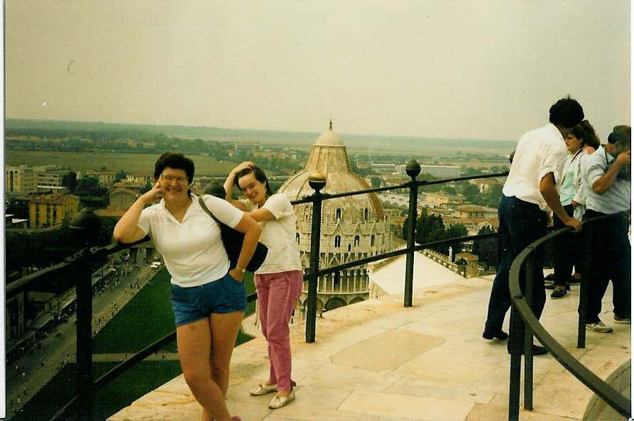

Inter Rail 1986 Day 17
Monday 8th September 1986
Didn't wake up until 10.00am. I then slobbed around writing up this diary whilst Eli and Jon went off to change
some money and buy some food. Being the size it is it is quite easy and pleasant to eat in our room.

The weather was warm enough for T-shirts and shorts but it was a bit overcast and a little lack of sun in comparison to Spain/Portugal. Prices
are not nearly as nice either. The other two are beginning to run short of money. I havn't told them I have £240 left in travellers
cheques!
Jon and Eli came back with 1.5 litres of wine for under a £1, some bread, cheese and ham. A hearty breakfast was eaten by all. Set off
out and headed for the Leaning Tower. Definitely the silliest building in the world. It cost £2 to get in. There is only one set of
stairs up/down so it is a bit of a crush. Went all the way to the top first with just 1 rest enroute. At the top there were seven bells in a
chamber. There was a second set of steps up although the easier spiral staircase was hidden. A set of traffic lights would definitely have
been in order as the steps were definitely one direction only at a time.
The view from the top was quite pleasant looking out over the town and back towards the Pisano mountains. Only the top two walkways had
railings around the outside. The entire surface is very smooth marble so walking around was interesting. Stopped at every level on the way
down to get our monies worth. With there being no railings the walk along the outer downslope sections became worse as you got lower or so it
seemed. At the bottom we discovered the Duomo and Baptisty had shut for the siesta so we decided to sit in the sun for a while but it got too
hot for us so we headed back to the room to write postcards and to have a bit of the wine. Ended up having a siesta of our own until 5pm.
Set off again for the Duomo which is entitled to Santa Maria Assunta. It was not a particularly ornate building but did have a very ornate and
elaborately carved pulpit which you had to pay to get lit up for photographs. It was made by Giovanni Pisano and is supposedly one of the
masterworks of medieval sculpture. Adam and Eve are apparently represented on one of the altars. The Baptistry of St. John is the largest
baptistry in Italy and is quite bare apart from its pulpit. It was sculpted between 1255-1260 by Nicola Pisano, father of the above mentioned
and appeared physically impossible to get into.
Wandered around the Roman walls for a bit then got ourselves some takeaway pizzas which we took back to our room and washed down with our wine.
I didn't get quite what I ordered. I got the seafoood one which had real whole squid sat on it.! Played a few card games then off to bed. Very
disturbed nights sleep caused by indigestion. Bloody squid!!
{kind=link}